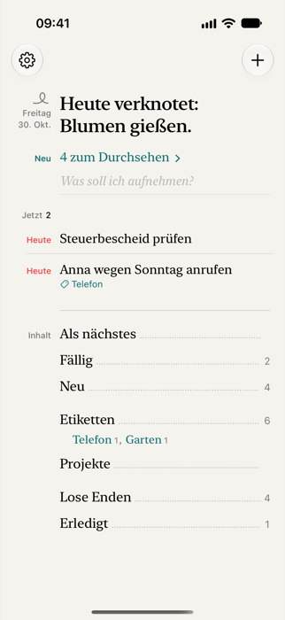

<title>Jetzt im Chat</title>
<meta name="claude:viewport-fit-sides" content="cover">
<style>
/* Layout: Entwurfsblatt — oben Kontext, dann je Variante ein Paar Telefone (hell, dunkel) nebeneinander, darunter die Lesart. */
:root {
  --bg: #F4F3EE; --fg: #1B1C19; --quiet: #77786F; --rule: #D9D8D0; --accent: #0F6E73; --panel: #FFFFFF;
  --serif: ui-serif, "New York", Georgia, "Times New Roman", serif;
  --sans: -apple-system, BlinkMacSystemFont, "SF Pro Text", "Segoe UI", Roboto, sans-serif;
}
@media (prefers-color-scheme: dark) { :root:not([data-theme="light"]) {
  --bg: #171816; --fg: #ECECE6; --quiet: #8E8F88; --rule: #34352F; --accent: #5FC4C9; --panel: #21221F; color-scheme: dark } }
:root[data-theme="dark"] { --bg: #171816; --fg: #ECECE6; --quiet: #8E8F88; --rule: #34352F; --accent: #5FC4C9; --panel: #21221F; color-scheme: dark }
body { background: var(--bg); color: var(--fg); font-family: var(--sans); line-height: 1.5;
  padding-left: max(16px, env(safe-area-inset-left, 0px)); padding-right: max(16px, env(safe-area-inset-right, 0px)); padding-block: 32px 64px; }
main { max-width: 1080px; margin: 0 auto; display: flex; flex-direction: column; gap: 56px; }
h1 { font-family: var(--serif); font-size: clamp(30px, 5vw, 44px); line-height: 1.1; margin: 0; text-wrap: balance; font-weight: 600; }
h2 { font-family: var(--serif); font-size: 26px; margin: 0; font-weight: 600; text-wrap: balance; }
.eyebrow { font-size: 12px; letter-spacing: .08em; text-transform: uppercase; color: var(--quiet); }
.lead { max-width: 64ch; font-size: 16px; display: flex; flex-direction: column; gap: 10px; }
.lead p, section p { margin: 0; }
section { display: flex; flex-direction: column; gap: 18px; }
.note { max-width: 64ch; color: var(--fg); }
.note ul { margin: 6px 0 0; padding-left: 20px; display: flex; flex-direction: column; gap: 4px; }
.pair { display: flex; flex-wrap: wrap; gap: 28px; align-items: flex-start; }
.cap { font-size: 12px; color: var(--quiet); margin-top: 8px; text-align: center; }

/* Telefonrahmen: eigene feste Farben je Thema, weil er ein bestimmtes Thema zeigt. */
.phone { width: 340px; max-width: 100%; border-radius: 38px; padding: 10px; background: #0C0C0B; box-shadow: 0 1px 0 rgba(0,0,0,.05); }
.screen { border-radius: 30px; overflow: hidden; background: var(--c-bg); color: var(--c-fg); padding: 22px 14px 18px; display: flex; flex-direction: column; gap: 12px; min-height: 600px; font-family: var(--sans); font-size: 14px; }
.screen.light { --c-bg: #FAF9F5; --c-fg: #2B2A27; --c-bubble: #EDEAE0; --c-card: #FFFFFF; --c-line: #E5E3DA;
  --p-paper: #F4F3EE; --p-ink: #1B1C19; --p-quiet: #77786F; --p-rule: #DCDBD3; --p-accent: #0F6E73; --p-red: #E5322D; --p-green: #3E8C5F; }
.screen.dark { --c-bg: #262624; --c-fg: #E8E6DE; --c-bubble: #3A3936; --c-card: #30302E; --c-line: #45443F;
  --p-paper: #171816; --p-ink: #ECECE6; --p-quiet: #8E8F88; --p-rule: #2E2F2B; --p-accent: #5FC4C9; --p-red: #FF5A52; --p-green: #35925A; }
.u { align-self: flex-end; background: var(--c-bubble); padding: 8px 12px; border-radius: 16px; max-width: 80%; }
.c { line-height: 1.45; }
.c small { color: var(--quiet); }

/* Entwurf A: Papier der App */
.paper { background: var(--p-paper); color: var(--p-ink); border: 1px solid var(--p-rule); border-radius: 14px; padding: 12px 6px 6px 0; }
.ph { display: grid; grid-template-columns: 62px 1fr; align-items: baseline; padding: 0 10px 6px 0; }
.ph .m { text-align: right; padding-right: 10px; font-size: 12px; color: var(--p-quiet); }
.ph .m b { color: var(--p-ink); font-weight: 600; }
.ph .s { font-size: 11px; color: var(--p-quiet); text-align: right; }
.row { display: grid; grid-template-columns: 62px 1fr auto; align-items: start; border-top: 1px solid var(--p-rule); padding: 6px 0 6px; }
.row .m { text-align: right; padding: 13px 10px 0 0; font-size: 11.5px; font-weight: 600; color: var(--p-quiet); }
.row .m.red { color: var(--p-red); }
.row .t { font-family: var(--serif); font-size: 17px; line-height: 1.3; padding-top: 10px; min-width: 0; }
.row .sub { font-family: var(--sans); font-size: 12.5px; color: var(--p-accent); margin-top: 2px; }
.row .wait { font-family: var(--serif); font-style: italic; font-size: 13px; color: var(--p-quiet); margin-top: 2px; }
.row.waiting .t > span:first-child { color: var(--p-quiet); }
.row.done .t > span:first-child { color: var(--p-quiet); text-decoration: line-through; text-decoration-color: var(--p-green); }
.row.done .wait { color: var(--p-green); font-style: normal; font-family: var(--sans); font-size: 12.5px; }
.acts { display: flex; }
.btn { width: 44px; height: 44px; display: grid; place-items: center; color: var(--p-accent); }
.btn.off { color: var(--p-quiet); opacity: .45; }
.detail { grid-column: 2 / 4; margin: 6px 10px 6px 0; padding-top: 8px; border-top: 1px dotted var(--p-rule); display: grid; grid-template-columns: auto 1fr; gap: 3px 12px; font-size: 12.5px; }
.detail dt { color: var(--p-quiet); }
.detail dd { margin: 0; }
.detail .acc { color: var(--p-accent); }

/* Alternative B: Karte in Claudes eigener Gestalt */
.card { background: var(--c-card); border: 1px solid var(--c-line); border-radius: 12px; overflow: hidden; font-family: var(--sans); }
.ch { display: flex; justify-content: space-between; align-items: baseline; padding: 12px 14px 8px; }
.ch b { font-size: 15px; }
.ch span { font-size: 11px; color: var(--p-quiet); }
.li { display: grid; grid-template-columns: 44px 1fr 32px; align-items: center; border-top: 1px solid var(--c-line); min-height: 52px; }
.box { width: 44px; height: 44px; display: grid; place-items: center; }
.box i { width: 20px; height: 20px; border: 1.6px solid var(--p-quiet); border-radius: 6px; display: block; }
.li.waiting .box i { border-color: var(--p-accent); border-style: dashed; }
.li.done .box i { background: var(--p-accent); border-color: var(--p-accent); position: relative; }
.li.done .box i::after { content: ""; position: absolute; left: 6px; top: 2px; width: 5px; height: 10px; border: solid var(--c-card); border-width: 0 2px 2px 0; transform: rotate(45deg); }
.li .tt { font-size: 14.5px; padding: 8px 0; min-width: 0; }
.li.done .tt > span:first-child { text-decoration: line-through; color: var(--p-quiet); }
.chips { display: flex; flex-wrap: wrap; gap: 4px; margin-top: 4px; }
.chip { font-size: 11px; padding: 1px 7px; border-radius: 999px; background: var(--c-bubble); color: var(--c-fg); }
.chip.red { background: transparent; color: var(--p-red); border: 1px solid currentColor; }
.chip.acc { background: transparent; color: var(--p-accent); border: 1px solid currentColor; }
.li .more { color: var(--p-quiet); display: grid; place-items: center; }
.cf { display: flex; gap: 8px; padding: 10px 14px 12px; border-top: 1px solid var(--c-line); }
.cf span { font-size: 12px; color: var(--p-accent); border: 1px solid var(--p-accent); border-radius: 999px; padding: 4px 10px; }

.today { display: flex; flex-wrap: wrap; gap: 28px; align-items: flex-start; }
.today img { width: 300px; max-width: 100%; border-radius: 28px; border: 1px solid var(--rule); }
.mono { font-family: ui-monospace, Menlo, monospace; font-size: 12.5px; white-space: pre-wrap; }
.q { border-top: 1px solid var(--rule); padding-top: 18px; }
.q ol { margin: 8px 0 0; padding-left: 20px; display: flex; flex-direction: column; gap: 6px; max-width: 70ch; }
@media (prefers-reduced-motion: no-preference) { .btn:hover, .box:hover { opacity: .8; } }
</style>

<main>
  <header class="lead">
    <div class="eyebrow">Entwurf zu #624 · Stand 16. November 2026</div>
    <h1>„Jetzt“ als Liste im Chat mit Claude</h1>
    <p>Heute antwortet Claude auf „Was steht an?“ mit Text. Künftig erscheint im Chat ein kleines Fenster mit derselben Liste wie in der App. Darin kannst du direkt abhaken, eine Aufgabe nach „Als nächstes“ legen und eine Zeile aufklappen, um ihre Angaben zu sehen.</p>
    <p>Ausgeführt wird jede Änderung wie bisher auf deinem iPhone oder Mac. Bis eines deiner Geräte sie übernommen hat, steht unter der Zeile „wartet auf dein Gerät“. Knäuel und Perle zeigt das Fenster an, schlägt sie aber nie vor und setzt sie nicht.</p>
  </header>

  <section>
    <div class="eyebrow">Heute</div>
    <h2>Die App und Claudes Antwort</h2>
    <div class="today">
      <div><div class="cap">App, Startseite (Store-Bild)</div></div>
      <div class="phone"><div class="screen light">
        <div class="u">Was steht heute an?</div>
        <div class="c">Unter „Jetzt“ stehen 2 Aufgaben (Stand 09:41):<br><br>1. <b>Steuerbescheid prüfen</b>, heute fällig<br>2. <b>Anna wegen Sonntag anrufen</b>, heute, Etikett Telefon<br><br>Soll ich eine davon abhaken oder verschieben?</div>
        <div class="u">Hake die erste ab.</div>
        <div class="c">Erledigt ist sie erst, wenn dein iPhone den Auftrag übernommen hat. Ich frage gleich nach …</div>
      </div><div class="cap">Claude heute: nur Text, jede Änderung per Zuruf</div></div>
    </div>
  </section>

  <section>
    <div class="eyebrow">Entwurf A · Empfehlung</div>
    <h2>Ein Stück Papier aus der App</h2>
    <div class="pair">
      <div><div class="phone"><div class="screen light">
        <div class="u">Was steht heute an?</div>
        <div class="c">Hier ist „Jetzt“. Abhaken geht direkt in der Liste.</div>
        <div class="paper">
          <div class="ph"><div class="m">Jetzt <b>4</b></div><div class="s">Stand 09:41</div></div>
          <div class="row">
            <div class="m"><svg width="26" height="16" viewBox="0 0 26 16" fill="none" aria-label="Knäuel"><path d="M2 13c5 0 7-2 9-6s5-5 7-3-1 6-4 5-3-5 1-6 7 2 9 8" stroke="currentColor" stroke-width="1.4" stroke-linecap="round"/></svg></div>
            <div class="t"><span>Keller ausmisten</span><div class="sub">Das Knäuel · seit Montag</div></div>
            <div class="acts"><span class="btn" title="Abhaken"><svg width="22" height="22" viewBox="0 0 22 22" fill="none"><circle cx="11" cy="11" r="9" stroke="currentColor" stroke-width="1.6"/></svg></span><span class="btn off" title="Als nächstes"><svg width="22" height="22" viewBox="0 0 22 22" fill="none"><path d="M3 11h11m-4-4 4 4-4 4M18 5v12" stroke="currentColor" stroke-width="1.6" stroke-linecap="round" stroke-linejoin="round"/></svg></span></div>
          </div>
          <div class="row done">
            <div class="m red">Heute</div>
            <div class="t"><span>Steuerbescheid prüfen</span><div class="wait">Erledigt auf deinem iPhone</div></div>
            <div class="acts"><span class="btn" style="color:var(--p-green)"><svg width="22" height="22" viewBox="0 0 22 22" fill="none"><circle cx="11" cy="11" r="9" fill="currentColor"/><path d="m7 11.3 2.6 2.6L15 8.4" stroke="var(--p-paper)" stroke-width="1.8" stroke-linecap="round" stroke-linejoin="round"/></svg></span><span class="btn off"></span></div>
          </div>
          <div class="row waiting">
            <div class="m red">Heute</div>
            <div class="t"><span>Anna wegen Sonntag anrufen</span><div class="wait">Abgehakt, wartet auf dein Gerät …</div></div>
            <div class="acts"><span class="btn"><svg width="22" height="22" viewBox="0 0 22 22" fill="none"><circle cx="11" cy="11" r="9" stroke="currentColor" stroke-width="1.6" stroke-dasharray="3 3"/></svg></span><span class="btn off"></span></div>
          </div>
          <div class="row">
            <div class="m">Nächstes</div>
            <div class="t"><span>Angebot für die Gartenmauer einholen</span><div class="sub">Garten</div></div>
            <div class="acts"><span class="btn"><svg width="22" height="22" viewBox="0 0 22 22" fill="none"><circle cx="11" cy="11" r="9" stroke="currentColor" stroke-width="1.6"/></svg></span><span class="btn"><svg width="22" height="22" viewBox="0 0 22 22" fill="none"><path d="M3 11h11m-4-4 4 4-4 4M18 5v12" stroke="currentColor" stroke-width="1.6" stroke-linecap="round" stroke-linejoin="round"/></svg></span></div>
            <dl class="detail"><dt>Fällig</dt><dd>Freitag</dd><dt>Projekt</dt><dd class="acc">Haus</dd><dt>Etiketten</dt><dd class="acc">Garten</dd><dt>Zeilen</dt><dd>2 offen</dd></dl>
          </div>
        </div>
      </div></div><div class="cap">Hell · letzte Zeile aufgeklappt</div></div>

      <div><div class="phone"><div class="screen dark">
        <div class="u">Was steht heute an?</div>
        <div class="c">Hier ist „Jetzt“. Abhaken geht direkt in der Liste.</div>
        <div class="paper">
          <div class="ph"><div class="m">Jetzt <b>4</b></div><div class="s">Stand 09:41</div></div>
          <div class="row">
            <div class="m"><svg width="26" height="16" viewBox="0 0 26 16" fill="none" aria-label="Knäuel"><path d="M2 13c5 0 7-2 9-6s5-5 7-3-1 6-4 5-3-5 1-6 7 2 9 8" stroke="currentColor" stroke-width="1.4" stroke-linecap="round"/></svg></div>
            <div class="t"><span>Keller ausmisten</span><div class="sub">Das Knäuel · seit Montag</div></div>
            <div class="acts"><span class="btn"><svg width="22" height="22" viewBox="0 0 22 22" fill="none"><circle cx="11" cy="11" r="9" stroke="currentColor" stroke-width="1.6"/></svg></span><span class="btn off"><svg width="22" height="22" viewBox="0 0 22 22" fill="none"><path d="M3 11h11m-4-4 4 4-4 4M18 5v12" stroke="currentColor" stroke-width="1.6" stroke-linecap="round" stroke-linejoin="round"/></svg></span></div>
          </div>
          <div class="row waiting">
            <div class="m red">Heute</div>
            <div class="t"><span>Steuerbescheid prüfen</span><div class="wait">Abgehakt, wartet auf dein Gerät …</div></div>
            <div class="acts"><span class="btn"><svg width="22" height="22" viewBox="0 0 22 22" fill="none"><circle cx="11" cy="11" r="9" stroke="currentColor" stroke-width="1.6" stroke-dasharray="3 3"/></svg></span><span class="btn off"></span></div>
          </div>
          <div class="row">
            <div class="m red">Heute</div>
            <div class="t"><span>Anna wegen Sonntag anrufen</span><div class="sub">Telefon</div></div>
            <div class="acts"><span class="btn"><svg width="22" height="22" viewBox="0 0 22 22" fill="none"><circle cx="11" cy="11" r="9" stroke="currentColor" stroke-width="1.6"/></svg></span><span class="btn"><svg width="22" height="22" viewBox="0 0 22 22" fill="none"><path d="M3 11h11m-4-4 4 4-4 4M18 5v12" stroke="currentColor" stroke-width="1.6" stroke-linecap="round" stroke-linejoin="round"/></svg></span></div>
          </div>
          <div class="row">
            <div class="m">Nächstes</div>
            <div class="t"><span>Angebot für die Gartenmauer einholen</span><div class="sub">Garten</div></div>
            <div class="acts"><span class="btn"><svg width="22" height="22" viewBox="0 0 22 22" fill="none"><circle cx="11" cy="11" r="9" stroke="currentColor" stroke-width="1.6"/></svg></span><span class="btn"><svg width="22" height="22" viewBox="0 0 22 22" fill="none"><path d="M3 11h11m-4-4 4 4-4 4M18 5v12" stroke="currentColor" stroke-width="1.6" stroke-linecap="round" stroke-linejoin="round"/></svg></span></div>
          </div>
        </div>
      </div></div><div class="cap">Dunkel</div></div>
    </div>
    <div class="note">
      <p>Das Fenster sieht aus wie ein Ausschnitt der Startseite: Papiergrund, Serifenschrift für die Titel, links am Rand „Heute“ in Rot und das Knäuel-Zeichen, Etiketten in der Akzentfarbe. Jede Zeile hat zwei Knöpfe: den Kreis zum Abhaken und den Pfeil für „Als nächstes“ (beim Knäuel ausgegraut, weil es ohnehin vorne steht). Ein Tipp auf den Titel klappt die Angaben auf.</p>
      <ul>
        <li>Gestrichelter Kreis und Kursivzeile: Auftrag liegt bereit, dein Gerät hat ihn noch nicht übernommen.</li>
        <li>Grüner Haken, durchgestrichen: dein Gerät hat abgehakt (Grün nur für diesen Moment, wie in der App).</li>
        <li>Die Reihenfolge und die Zahl über „Jetzt“ kommen aus der App, das Fenster rechnet nichts selbst.</li>
      </ul>
    </div>
  </section>

  <section>
    <div class="eyebrow">Alternative B</div>
    <h2>Eine Karte in Claudes eigener Gestalt</h2>
    <div class="pair">
      <div><div class="phone"><div class="screen light">
        <div class="u">Was steht heute an?</div>
        <div class="c">Hier ist „Jetzt“.</div>
        <div class="card">
          <div class="ch"><b>Jetzt · 4</b><span>Stand 09:41</span></div>
          <div class="li"><span class="box"><i></i></span><div class="tt"><span>Keller ausmisten</span><div class="chips"><span class="chip">Knäuel</span></div></div><span class="more">›</span></div>
          <div class="li done"><span class="box"><i></i></span><div class="tt"><span>Steuerbescheid prüfen</span><div class="chips"><span class="chip red">heute</span></div></div><span class="more">›</span></div>
          <div class="li waiting"><span class="box"><i></i></span><div class="tt"><span>Anna wegen Sonntag anrufen</span><div class="chips"><span class="chip red">heute</span><span class="chip">wartet auf Gerät</span></div></div><span class="more">›</span></div>
          <div class="li"><span class="box"><i></i></span><div class="tt"><span>Angebot für die Gartenmauer einholen</span><div class="chips"><span class="chip acc">Garten</span><span class="chip">Als nächstes</span></div></div><span class="more">›</span></div>
          <div class="cf"><span>Als nächstes …</span><span>Fällig</span></div>
        </div>
      </div></div><div class="cap">Hell</div></div>
      <div><div class="phone"><div class="screen dark">
        <div class="u">Was steht heute an?</div>
        <div class="c">Hier ist „Jetzt“.</div>
        <div class="card">
          <div class="ch"><b>Jetzt · 4</b><span>Stand 09:41</span></div>
          <div class="li"><span class="box"><i></i></span><div class="tt"><span>Keller ausmisten</span><div class="chips"><span class="chip">Knäuel</span></div></div><span class="more">›</span></div>
          <div class="li waiting"><span class="box"><i></i></span><div class="tt"><span>Steuerbescheid prüfen</span><div class="chips"><span class="chip red">heute</span><span class="chip">wartet auf Gerät</span></div></div><span class="more">›</span></div>
          <div class="li"><span class="box"><i></i></span><div class="tt"><span>Anna wegen Sonntag anrufen</span><div class="chips"><span class="chip red">heute</span><span class="chip acc">Telefon</span></div></div><span class="more">›</span></div>
          <div class="li"><span class="box"><i></i></span><div class="tt"><span>Angebot für die Gartenmauer einholen</span><div class="chips"><span class="chip acc">Garten</span><span class="chip">Als nächstes</span></div></div><span class="more">›</span></div>
          <div class="cf"><span>Als nächstes …</span><span>Fällig</span></div>
        </div>
      </div></div><div class="cap">Dunkel</div></div>
    </div>
    <div class="note">
      <p>Hier passt sich das Fenster an Claude an statt an die App: weiße bzw. dunkelgraue Karte, Claudes Schrift, Kästchen links zum Abhaken, Angaben als kleine Marken. Ein Tipp auf die Zeile öffnet die Angaben, „Als nächstes“ steckt dort statt in der Zeile. Wirkt vertrauter im Chat, aber nicht mehr wie Loose Ends.</p>
    </div>
  </section>

  <section class="q">
    <div class="eyebrow">Was du entscheidest</div>
    <ol>
      <li>Gestalt: A (Papier der App) oder B (Claudes Karte)?</li>
      <li>Umfang des ersten Schritts: nur „Jetzt“, oder gleich jede Ansicht (Fällig, Als nächstes, Lose Enden) in derselben Gestalt?</li>
    </ol>
  </section>
</main>
